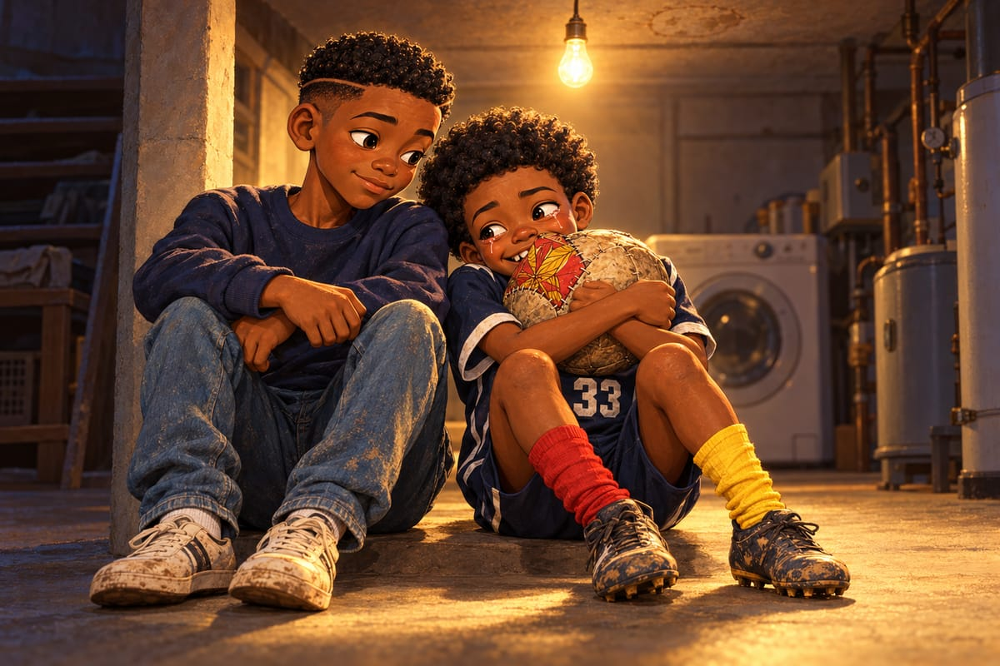

Les chiffres de Marcus
« Hey, thirty-three. Got a minute ? »
Kaydoudou se fige. Trop tard pour fuir.
Marcus Bell est assis sur la glacière des ballons, la tablette sur les genoux. Il sourit. Kaydoudou connaît ce sourire : c'est celui du « nine times in a row ».
Le dossier, pense Kaydoudou. BriBri m'a prévenu. Monsieur Tablette a un dossier sur moi.
« I don't like numbers, prévient-il. Numbers don't like me. »
« Then let's make friends. »
« Les chiffres, c'est comme les moustiques, ajoute Kaydoudou. Petits, nombreux, et toujours là quand on veut être tranquille. »
Ils se cachent même dans les problèmes de Mrs. Kowalski, sa maîtresse. Jenny a dix-sept pommes, elle en donne neuf… Mange-les, Jenny !
« Diego ! appelle Kaydoudou. Viens traduire ! Vite ! »
Diego arrive en jonglant.
« He speaks French, bro. A little. »
« Un petit peu », dit Marcus, dans son français cabossé. « Assis, Kaydoudou. »
« Bowie, samedi, dit Marcus. 1‑1. »
« Tu as dribblé tout le monde, bro, ajoute Diego. Et tu as marqué zéro but. »
« Merci, Diego. »
Marcus tourne la tablette. Un terrain dessiné, couvert de croix rouges et de quelques ronds verts.
« Tu as essayé… twenty-three dribbles », dit Marcus en cherchant ses mots.
« Vingt-trois ! » Kaydoudou bombe le torse. « C'est presque un record ! »
« Seventeen lost. »
« Dix-sept perdus, traduit Diego. Ouch. »
Kaydoudou fait la grimace de quelqu'un qui croque un piment par erreur.
« C'est pire que Jenny et ses pommes. »
« Who is Jenny ? » demande Marcus.
« Laisse, dit Diego. C'est compliqué. »
« Okay. Now… the good part. »
Marcus touche l'écran. Les croix disparaissent. Il reste quatre ronds verts, entourés de jaune.
« Quatre fois, dit-il lentement, tu as fait une chose… spéciale. Tu dribbles. Et deux défenseurs viennent sur toi. Deux. En même temps. »
« Deux ? Je me souviens pas. »
« Toi, tu te souviens que des beaux », dit Diego.
« Normal ! Les beaux, c'est les meilleurs ! La roulette au milieu du terrain ! Le crochet du margouillat, quand le défenseur est tombé sur les fesses ! Et le sombrero… Bon. Le sombrero, je l'ai raté. »
« And three times out of four, dit Marcus, a teammate got a shot. Because two players came to you. So somebody was free. »
« Trois fois sur quatre, un copain a pu tirer, traduit Diego. Parce que deux joueurs sont venus sur toi. Donc quelqu'un était seul. »
« Look », dit Marcus. Et il lance la vidéo.
« C'est qui, ce garçon ? demande Kaydoudou. Il court comme un épouvantail dans le vent ! Il trébuche. Le ballon part trop loin. Regarde ses bras ! Il est nul ! »
« C'est toi, bro. »
« … Ah. »
« Et maintenant, regarde, dit Diego. Deux joueurs sautent sur l'épouvantail. Et qui arrive tout seul derrière ? Moi ! Tu me donnes le ballon, presque par accident. Et je frappe… juste à côté. Sorry. »
« Celui-là ? proteste Kaydoudou. Mais il est moche ! Je l'avais même oublié ! »
Marcus rit. Puis il récite une phrase en français. Il a dû la préparer, parce qu'il la dit comme une poésie.
« Ton dribble le plus utile n'est pas le plus beau. C'est celui qui fait venir deux joueurs vers toi. »
Kaydoudou se tait.
Il pense aux Requins de Bépanda, qui l'enfermaient à deux, encore et encore. À l'époque, deux joueurs sur lui, c'était une prison. Marcus dit que c'est une clé.
« Deux joueurs sur moi, dit-il lentement, ça veut dire un copain tout seul. »
« Exactly ! You are a magnet, Kaydoudou. »
« A what ? »
Marcus montre le frigo de la petite cuisine du dôme, couvert de dessins tenus par de petits objets colorés.
« Un aimant ! crie Kaydoudou. Je suis un aimant ! »
Il met la main devant la bouche, comme Radio à Bonamoussadi, avec son micro imaginaire.
« Mesdames et messieurs, voici le nouveau coup spécial de Kaydoudou… L'AIMANT ! »
« I don't understand, dit Marcus. But I like it. »
« Bro, dit Diego. You need a cape. »
« Oui ! Une cape rouge et jaune ! »
Le problème, c'est qu'un aimant ne sert à rien si personne ne vient chercher ce qu'il attire.
Et le problème a un nom. Tyler Brooks.
« Tyler ne passe jamais, se plaint Kaydoudou à son frère, le soir. Jamais ! Il frappe de trente mètres. Du mauvais pied. En tournant sur lui-même. Et quand il n'a pas le ballon, il crie here, here, comme si on lui devait de l'argent ! »
« Ça me rappelle quelqu'un », dit BriBri.
« Qui ? »
BriBri ne répond pas. Il sourit dans son livre.
Jeudi, petit match de fin d'entraînement. Kaydoudou essaie l'aimant. Un défenseur vient. Un deuxième.
Ça marche !
Il devrait passer. Mais il y a un troisième défenseur, juste devant. Tellement tentant.
Encore un. Juste un.
Crochet. Raté. Ballon perdu.
Tyler, seul au point de penalty, tape du pied dans l'herbe en plastique.
« Pass the ball, man ! You never pass ! »
« C'est l'hôpital qui se moque de la charité ! » s'écrie Kaydoudou.
« The what ? » demande Diego.
« C'est Maman qui dit ça. Il fait pareil, et c'est lui qui se plaint ! »
Deux minutes plus tard, Tyler récupère le ballon. Il ignore Diego, seul à gauche. Il ignore Kaydoudou, seul à droite. Il tire dans les nuages. Boum, le toit du dôme.
« Et toi ? crie Kaydoudou en français. Tu passes, toi ? Tu ne passes même pas le sel à table, je suis sûr ! »
« What did he say ? » demande Tyler à Diego.
Diego choisit ses mots avec soin.
« He says you're a great shooter. »
« Diego ! Traduis bien ! »
« Bro, I'm saving your life. »
BriBri passe à côté avec sa gourde. Il ne s'arrête même pas.
« Le dribbleur qui ne passe jamais crie sur l'attaquant qui ne passe jamais. On devrait vendre des billets. »
Tuuut !
« Brooks ! Thirty-three ! crie Coach Whitfield. Cones. Together. All of them ! »
« All of them ? » gémit Tyler.
« ALL of them. »
Cinquante cônes, à ramasser à deux, pendant que les autres boivent. Pas un mot. Pas un regard. À la fin, il en reste un seul, au milieu. Ils se baissent en même temps.
Bonk !
« Ow ! »
« Aïe ! »
Ils se frottent le front. Une seconde, Kaydoudou croit que Tyler va rire. Mais Tyler jette le cône dans le sac et s'en va.
Samedi suivant. Potomac Valley contre les Frederick Foxes, en maillots orange. Autour du terrain, les arbres sont couverts de fleurs blanches qui sentent le miel. Le soleil du matin rend tout doré.
Avant le coup d'envoi, Kaydoudou croise le regard de son frère. Poing contre poing. Main sur le cœur.
« Aujourd'hui, l'aimant », souffle Kaydoudou.
« Et aujourd'hui, tu passes », répond BriBri.
« Si Tyler est seul. »
« Il sera seul. Fais-moi confiance. »
35e minute. 0‑0.
BriBri reçoit au milieu. Il glisse le ballon dans la course de Kaydoudou, sur le côté droit.
« Go, thirty-three ! » crie Coach Whitfield.
Kaydoudou file vers la surface. Un défenseur orange vient. Puis, du coin de l'œil, il en voit un deuxième lâcher son attaquant. Il vient aussi.
Deux. Deux défenseurs sur lui en même temps.
Et le temps ralentit.
Kaydoudou entend son souffle. Les crampons orange qui arrachent l'herbe. Une abeille, dans les fleurs blanches. Papa qui crie « Allez ! », très loin, comme sous l'eau.
À Douala, il aurait foncé dans le mur. Pour voir.
Deux joueurs sur toi, dit la voix de Marcus dans sa tête. Un copain tout seul.
Alors Kaydoudou ne fonce pas. Il ralentit. Un petit pas vers la ligne de fond. Une épaule. Les deux défenseurs mordent ensemble, comme deux poissons sur le même hameçon.
Kaydoudou ne les regarde plus. Ses yeux sont déjà de l'autre côté. Son pied droit aussi.
Là-bas, au point de penalty, il y a Tyler. Tout seul. Les bras ouverts. La bouche ouverte. Pour une fois, il ne crie rien. Il n'en croit pas ses yeux.
Tiens, pense Kaydoudou. Je te passe le sel.
Intérieur du pied droit. À ras de terre.
Le temps repart d'un coup.
Tyler frappe. Chhh ! 1‑0.
Sur la ligne, Papa se lève si vite que son bonnet tombe dans l'herbe. Diego saute sur le dos de BriBri.
« Magnet ! » crie Marcus, la tablette en l'air.
« L'AIMAAANT ! hurle Kaydoudou, la main devant la bouche. L'aimant de Bonamoussadi frappe en Amérique ! »
Tyler se retourne. Il a l'air gêné, comme quelqu'un qui reçoit un cadeau le jour où il n'a rien acheté pour personne. Il lève la main. La baisse. La relève.
Kaydoudou tape dedans.
« Nice pass », marmonne Tyler, en regardant ses chaussures.
« Nice goal », dit Kaydoudou, en regardant les siennes.
« Tu vois ? dit BriBri en passant. Il était seul. »
Puis Tyler repart en courant. Tout le reste du match, il crie « Here ! » un peu moins fort. Et une fois, une seule, il fait une passe à Diego.
« Did you see that ? hurle Diego. He passed ! Tyler passed ! Call the TV ! »
Potomac Valley gagne 2‑0.
Le soir, le téléphone de Maman vibre. Un message vocal de Douala. Maman monte le son. D'un coup, la cuisine se remplit de klaxons. Pin-pin ! Pin-pin ! Une marchande chante « Arachides, arachides ! ». Et par-dessus, une voix qu'ils connaissent par cœur.
« On dit quoi, les Américains ? C'est Mireille ! Vous êtes devenus des bonshommes de neige, ou quoi ? »
Kaydoudou éclate de rire si fort qu'il avale de travers.
« Le tournoi de saison sèche a commencé ! Tonton Fokou crie toujours que le ballon doit voyager. Son sifflet fait toujours houou, comme un hibou enrhumé. Ousmane ne quitte pas ton bracelet, Kaydoudou. Même pas pour se laver ! Et on a un nouveau gardien remplaçant. Ange. Il a huit ans. Il plonge même quand le ballon va à côté. Ousmane l'entraîne. Il dit qu'il a des mains de crevette, mais un cœur de lion. »
Pin-piiiiin ! Un énorme klaxon, juste à côté du téléphone.
« Eh, benskineur, tu veux me tuer ? »
Le message s'arrête.
Dans la cuisine, personne ne parle.
Kaydoudou rit encore. Mais au fond de lui, quelque chose s'est mis à pleurer en même temps.
« Un nouveau gardien, dit-il tout bas. Ange. Je le connais même pas. »
« Ils ne t'oublient pas, mon lion, dit Maman. Tu as entendu ? Ousmane porte ton bracelet. »
« Mais ils jouent sans moi. Le manguier, la terre rouge… tout continue. Ça n'attend personne. »
Il descend au sous-sol. Il prend le ballon de Mami. Il le serre contre lui, longtemps, le nez dans le carré de pagne, sous l'ampoule nue.
BriBri descend et s'assoit à côté de lui. Longtemps, il ne dit rien. Puis :

« Ange, c'est un bon nom pour un gardien. »
« Pourquoi ? »
« Il a des ailes. »
Kaydoudou rit, le nez encore dans le pagne.
Il est content. Il est triste. Il ne savait pas qu'on pouvait être les deux à la fois. Comme une chaussette rouge et une chaussette jaune.
Jeudi, fin de l'entraînement. Tyler l'attend près de la porte tournante, les mains dans les poches.
« Hey. Uh. You wanna come to my house on Sunday ? I've got the new soccer video game. »
Kaydoudou le regarde longtemps. Puis il sourit de toutes ses dents, avec le petit écart du bonheur au milieu.
« Okay. But one condition. »
« What ? »
Kaydoudou remonte le bas de son survêtement. Une chaussette rouge. Une chaussette jaune.
« Next match, you wear the socks. »
Tyler devient aussi rouge que la chaussette droite.
« No way. »
« Then no video game. »
« Come on, man ! »
« Socks. Or no game. »
Tyler regarde le plafond du dôme. Il regarde la porte. Il regarde ses chaussettes noires, si bien tirées.
« … Fine. »
Le samedi, sur le parking, toute l'équipe voit arriver Tyler Brooks. Le meilleur attaquant de l'académie. La plus grande bouche du Maryland. Il marche vite, la tête basse.
Une chaussette rouge à la jambe gauche. Une chaussette jaune à la jambe droite.
À l'envers. Mais personne n'ose le lui dire.
Diego en lâche son ballon.